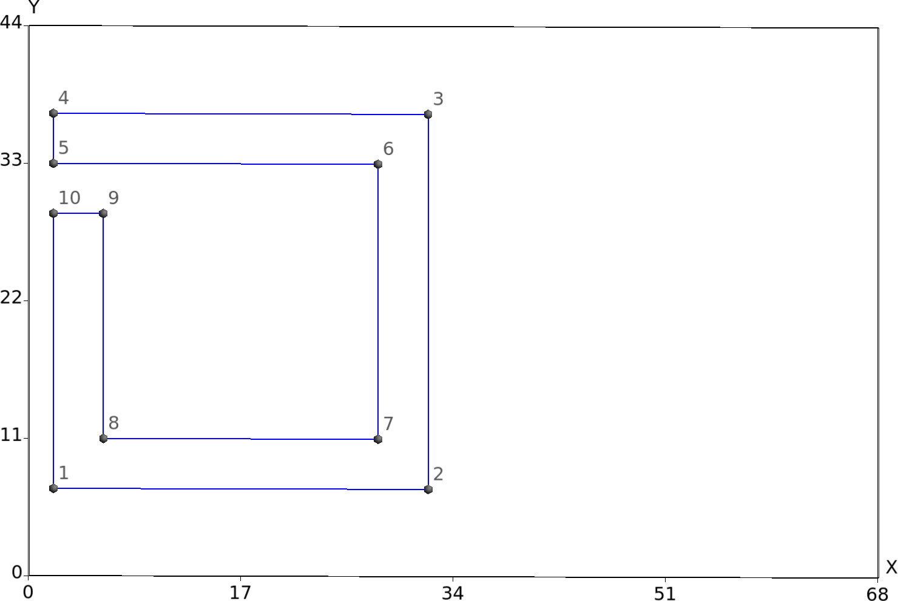
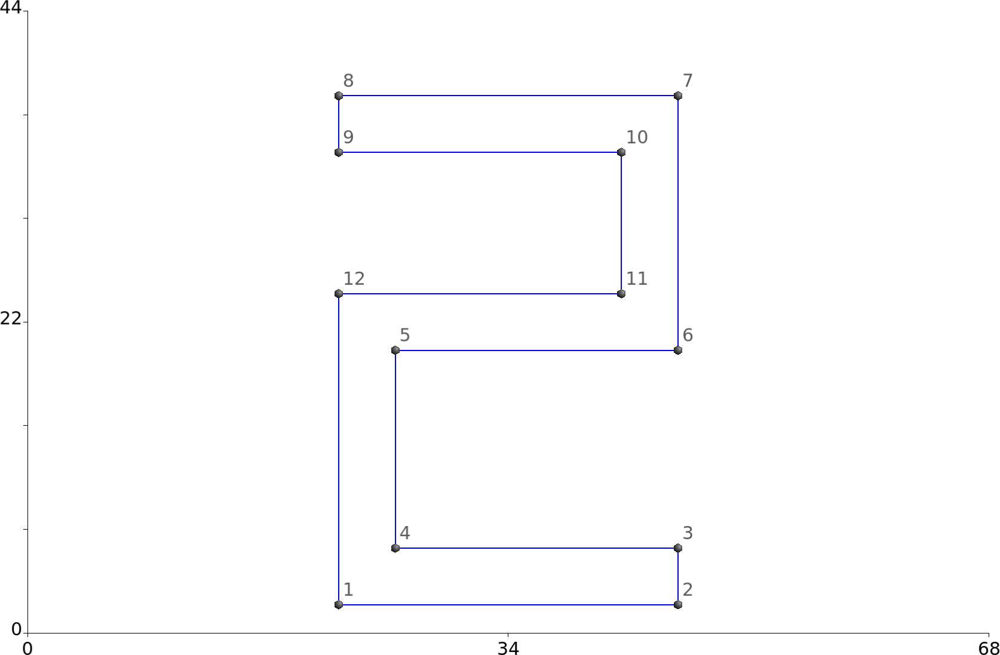

Polarization-rotated transmission through a chiral metasurface
In this example we study the phenomenon reported in this paper:
- Yi-Ju Chiang and Ta-Jen Yan, "A composite-metamaterial-based terahertz-wave polarization rotator with an ultrathin thickness, an excellent conversion ratio, and enhanced transmission", Applied Physics Letters 102 011129 (2013). DOI: http://dx.doi.org/10.1063/1.4774300
The idea is to construct a chiral metasurface consisting of an infinite planar array of scatterers with definite handedness, with the scatterers here consisting of thin metal strips in specific patterns. Over a certain range of wavelengths, shining x-polarized light on the structure from below preferentially yields a flux of y-polarized light into the upper half-space.
The files for this example may be found in the
ChiralMetasurfaceRotator subdirectory
of the SCUFFTutorial archive.
GMSH geometries and meshes for asymmetric split-ring resonator (ASRR) and S-shaped resonator (SR)
The actual structure described in the paper of Chiang and Yan consists of finite (200 nm)-thickness copper traces on either side of a 50 m-thick dielectric substrate. For this demonstration we will slightly idealize this geometry by (a) taking the traces to be infinitely thin and perfectly conducting, (b) taking the dielectric constant of the substrate to be unity. That is, our geometry will consist of infinitesimally thin PEC sheets suspended in vacuum.
GMSH Geometry and mesh files for asymmetric split-ring resonator (ASRR) and S-shaped resonator (SR)
ASRR.geoDefineConstant[ A = 30 ];
DefineConstant[ B = 7 ];
DefineConstant[ C = 2 ];
DefineConstant[ G = 4 ];
DefineConstant[ W = 4 ];
DefineConstant[ L = 1 ];
Point(1) = { C, B, 0, L };
Point(2) = { C+A, B, 0, L };
Point(3) = { C+A, B+A, 0, L };
Point(4) = { C, B+A, 0, L };
Point(5) = { C, B+A-W, 0, L };
Point(6) = { C+A-W, B+A-W, 0, L };
Point(7) = { C+A-W, B+W, 0, L };
Point(8) = { C+W, B+W, 0, L };
Point(9) = { C+W, B+A-W-G, 0, L };
Point(10) = { C, B+A-W-G, 0, L };
Line(1) = {1,2};
Line(2) = {2,3};
Line(3) = {3,4};
Line(4) = {4,5};
Line(5) = {5,6};
Line(6) = {6,7};
Line(7) = {7,8};
Line(8) = {8,9};
Line(9) = {9,10};
Line(10) = {10,1};
Line Loop(1)={1,2,3,4,5,6,7,8,9,10};
Ruled Surface(1)={1};
SR.geoDefineConstant [ T = 2 ];
DefineConstant [ W = 4 ];
DefineConstant [ Q = 14 ];
DefineConstant [ P = 22 ];
DefineConstant [ R = 24 ];
DefineConstant [ S = 22 ];
DefineConstant [ L = 1 ];
Point(1) = { S, T, 0, L };
Point(2) = { S+R, T, 0, L };
Point(3) = { S+R, T+W, 0, L };
Point(4) = { S+W, T+W, 0, L };
Point(5) = { S+W, T+P-W, 0, L };
Point(6) = { S+R, T+P-W, 0, L };
Point(7) = { S+R, T+P+Q, 0, L };
Point(8) = { S, T+P+Q, 0, L };
Point(9) = { S, T+P+Q-W, 0, L };
Point(10) = { S+R-W, T+P+Q-W, 0, L };
Point(11) = { S+R-W, T+P, 0, L };
Point(12) = { S, T+P, 0, L };
Line(1) = {1,2};
Line(2) = {2,3};
Line(3) = {3,4};
Line(4) = {4,5};
Line(5) = {5,6};
Line(6) = {6,7};
Line(7) = {7,8};
Line(8) = {8,9};
Line(9) = {9,10};
Line(10) = {10,11};
Line(11) = {11,12};
Line(12) = {12,1};
Line Loop(1) = {1,2,3,4,5,6,7,8,9,10,11,12};
Ruled Surface(1) = {1};
Create mesh files:
% gmsh -2 ASRR.geo -o ASRR.msh
% gmsh -2 SR.geo -o SR.mshASRR.msh
SR.mshSCUFF-EM geometry for periodic lattice of ASRRs / SRs
CMRFine.scuffgeoLATTICE
VECTOR 68.0 0.0
VECTOR 0.0 44.0
ENDLATTICE
OBJECT LeftASRR
MESHFILE ASRR_1444.msh
DISPLACED 0 0 -25
ENDOBJECT
OBJECT RightASRR
MESHFILE ASRR_1444.msh
DISPLACED -17.0 -22.0 0.0
ROTATED 180 ABOUT 0.0 0.0 1.0
DISPLACED 17.0 22.0 0.0
DISPLACED 34.0 0.0 -25
ENDOBJECT
OBJECT SR
MESHFILE SR_1424.msh
DISPLACED 0.0 0.0 25
ENDOBJECTUse SCUFF-ANALYZE to obtain a visual image of the innermost several cells of the lattice
% scuff-analyze --geometry CMRMedium.scuffgeo --WriteGMSHFiles --Neighbors 3
% Thank you for your support.
Use SCUFF-TRANSMISSION to compute transmission coefficients
mylaptop% scuff-transmission --geometry CMRFine.scuffgeo --OmegaFile OmegaFile --ZAbove 25.0 --ZBelow -25.0Plot TE->TE and TE->TM transmission coefficients versus frequency in THz:
gnuplot> THZ(w)=3e14*w/(2*pi*1e12)
gnuplot> plot 'CMRFine.transmission' u (THZ($1)):23 w lp pt 7 ps 1 t 'EX-EX',
'' u (THZ($1)):25 w lp pt 6 ps 1.5 t 'EX-EY',